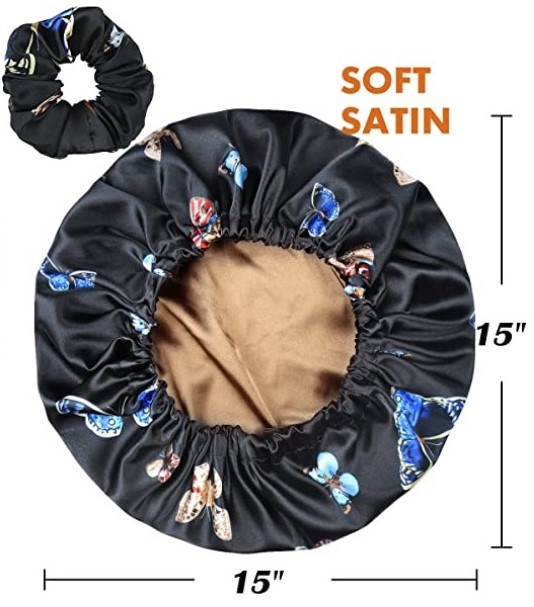

I'll start this out by saying that everything I say here is from my own experience and that everyone's hair is different, so your milage may vary. I will also be linking to other websites that I've found useful during my hair journey
I follow what's called the "Curly Girl/Guy Method". The CGM (as I will now refer to it) is a hair care routine that is designed to be used on all types of curly hair (wavy, curly and coily are the main types and you can look here to try and find what kind of curly your hair may be). For me, the CGM boils down to reducing the use of shampoo on your hair and mainly co-washing, which is washing your hair only with conditioner. There are also many ingredients in hair products that the CGM encourages you to avoid, mostly Sulphates, Silicones, and Drying Alcohols. A helpful site I've found to check for these is Is it CG?, all you do is copy/paste the products ingredients into the box on that website and it will tell you if it finds any that aren't CG approved.
The routine I've found that works best for me is co-washing my hair at most every other day (usually 2 days between washes) and then clarifying once a month (or more, depending on how my hair feels or how much product I've been using. Some say at least once every 4-8 weeks). For co-washing I just apply conditioner as I normally would, and then use a scalp massager to make sure I'm exfoliating my scalp and getting it clean. When I'm ready to rinse out the conditioner I do whats called Squish to Condish, which is basically running some water into your hair, then squishing the water and conditioner together in your hair to make sure your hair is absorbing all of the moisture that it can (moisture is very important to curly hair). When it comes to drying my hair I only use microfiber towels on it. This alone has helped show a major improvement in my hair's overall health and curl health. For styling I like to use curl creams to help tame frizz and also add a little bit more ooph to my curls, but honestly most mornings I just re-wet my hair entirely, partially dry with my microfiber towel and then let it air dry the rest of the way. A lot of sources will say to never use heat on your curly hair, but diffusing is another great way to dry your hair more quickly without risking to much damage, just make sure to set the blow dryer to its lowest settings.
Here are some products that I use and would definitely recommend (as stated above, everyone's curly hair is different so trial and error is a big part of finding what works best for your hair!).
- The conditioner I used for quite a while disappeared, so I've been trying new ones lately. The two that I've found, and actually liked so far are
- For styling this has been my go to for a while, it doesn't make my hair crunchy like some products do (scrunching my hair after this has dried/set does help though) and I feel like it doesn't cause a ton of build up over time.
- This is the microfiber towel I use for drying. You don't have to go for such an expensive one, I used to use much smaller ones, but my hair holds a lot of water so I had to upgrade to a full sized towel.
- I also HIGHLY recommend getting either a satin sleep cap or satin pillow case. Below is the one I wear nightly and it has definitely cut down on how frizzy my hair is. 

and